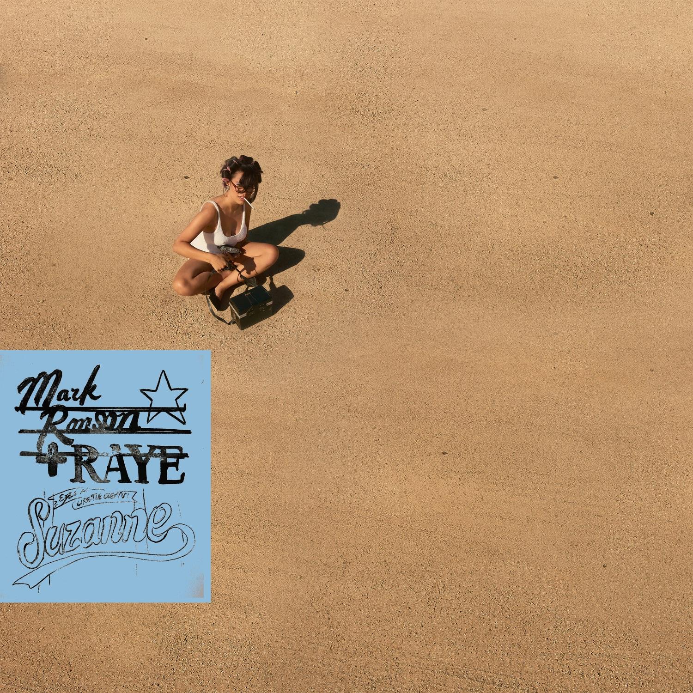

이 지면은 9월 16일 자정에 아카이브로 이관됩니다

지브라 베타 Vol.40
Suzanne (At The Church)
Mark Ronson & RAYE
마크 론슨(Mark Ronson)은 에이미 와인하우스의 명반 《Back to Black》을 공동 프로듀싱하고, 레트로하고 세련된 사운드로 이름을 알린 스타 프로듀서입니다. 레이(RAYE)는 활동 초기부터 에이미 와인하우스와 비교될 정도로 주목받아 온 싱어송라이터로, 2024년 브릿 어워드에서 여섯 개의 트로피를 거머쥐며 한 시상식 최다 수상 기록을 세운, 지금 영국에서 가장 주목받는 뮤지션이기도 합니다.
둘은 스위스 하이엔드 시계 브랜드 오데마 피게(1875년 창립)의 150주년을 맞아 2025년 진행된 'APxMusic' 프로젝트를 통해 첫 협업을 하게 됩니다. 레이는 처음 마크 론슨과의 작업이 자신과 에이미 와인하우스의 비교를 다시 불러올 수 있다는 점에서 망설였다고 밝혔으나 마크 론슨의 트랙을 듣자마자 몇 분 만에 직관적으로 'Suzanne'이라는 제목을 떠올렸다고 합니다.
이 버전은 런던의 처치 스튜디오(The Church Studios)에서 라이브로 녹음한 것입니다. 처치 스튜디오는 옛 교회를 개조한 스튜디오로, 현재까지도 수많은 뮤지션이 찾는 런던의 상징적인 녹음 공간입니다. 아델의 《25》를 비롯해 Eurythmics, U2, Radiohead, Bob Dylan 등의 음악이 이곳에서 녹음됐습니다.
처치 스튜디오에서의 라이브 무대를 유튜브 영상으로 꼭 감상해 보시길 권합니다.
노래RAYE작곡Mark Ronson · Rachel Keen · Tommy Brenneck · Eric Hagstrom프로듀서Mark Ronson · Tommy Brenneck앨범Suzanne (At The Church) · 2025

zebra beta · movement 2.